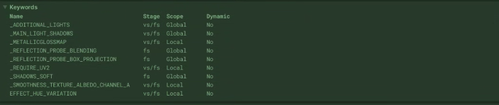
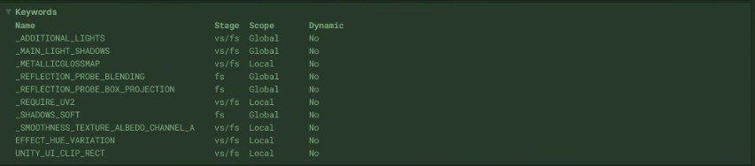

Frame Debugger로 진단한 lilToon 런타임 투명화 문제
프로젝트 요약
캐릭터의 lilToon 멀티 머티리얼을 런타임에서 불투명과 투명 상태로 전환하는 기능을 구현했습니다.
Alpha와 Blend 값은 GPU에 정상적으로 전달됐지만 불투명 셰이더 Variant가 계속 실행되는 문제가 있었습니다. Frame Debugger를 통해 누락된 lilToon 내부 키워드가 원인임을 확인한 뒤, 렌더링 상태와 셰이더 키워드를 함께 동기화해 문제를 해결했습니다.
| 항목 | 내용 |
|---|---|
| 프로젝트 | 3D 캐릭터 기반 비주얼 노벨 |
| 담당 | Unity 클라이언트 개발 |
| 기술 | Unity, C#, lilToon, Shader Variant, Frame Debugger |
문제 상황
캐릭터의 등장·퇴장 연출을 위해 lilToon 멀티 머티리얼의 _Color.a, Blend, Render Queue 관련 속성을 런타임에서 변경했습니다. Inspector에는 변경된 값이 표시됐지만 캐릭터는 투명해지지 않았습니다.
반면 실행 중 Inspector를 갱신하면 동일한 프로퍼티 값으로 투명화가 뒤늦게 적용됐습니다.
원인 분석 방법
Frame Debugger에서 Draw Call을 분석한 결과, 스크립트에서 변경한 Color와 Alpha 값은 GPU에 정상적으로 전달되고 있었습니다. 그러나 실제 렌더링에는 투명 셰이더가 아닌 불투명 Variant가 사용되고 있었습니다.
또한 실행 중 Inspector 갱신 후에야 투명화가 적용되는 현상을 바탕으로, Inspector 갱신 과정에서 설정되는 lilToon 내부 키워드를 런타임 코드에서 누락했다고 판단했습니다. 이후 Inspector 갱신 전후의 셰이더 키워드를 비교해 누락된 키워드를 찾아냈습니다.
Inspector 갱신 전후 키워드 비교
Inspector로 머티리얼을 갱신하기 전과 후의 키워드를 비교했습니다. 투명화가 적용된 상태에서는 UNITY_UI_CLIP_RECT가 활성화된다는 차이를 발견했습니다.
이름만 보면 UI 클리핑을 위한 키워드이므로 바로 투명 렌더링과 연결하기 어려웠습니다. 프로젝트에서 사용한 lilToon 버전의 에디터 코드와 셰이더 코드를 따라가며 실제 역할을 확인했습니다.

▼

lilToon 셰이더 Variant 추적
lilToon 멀티 셰이더의 에디터 코드를 추적한 결과, _TransparentMode가 Transparent인 경우 UNITY_UI_CLIP_RECT 키워드를 활성화하는 것을 확인했습니다.
이 키워드는 셰이더 내부에서 LIL_RENDER 2로 변환되어 알파 블렌딩을 처리하는 렌더링 경로를 선택합니다.
따라서 Alpha와 Blend 값만 변경하면 값 자체는 전달되더라도 불투명 Variant가 계속 실행됩니다. Inspector를 클릭했을 때 투명화가 적용된 이유는 lilToon 에디터가 머티리얼 프로퍼티에 맞춰 키워드를 다시 동기화했기 때문이었습니다.
렌더링 상태에 따라 프로퍼티와 키워드 동기화
투명 모드 전환 시 Alpha 값과 함께 Blend, Depth, Render Queue 등의 렌더링 프로퍼티와 셰이더 키워드를 동기화하여 투명화를 구현했습니다.
public static void SetTransparentMode(Material _mat, bool _on)
{
//2025-09-19 KHJ : 해당사항 없는 머테리얼 제외
if (!_mat.HasProperty(ID_TMode))
return;
//Dump(_mat);
int prevMode = (int)_mat.GetFloat(ID_TMode);
//2025-09-19 KHJ :이미 투명모드
if (_on && prevMode == 2)
return;
//2025-09-19 KHJ :이미 오파큐모드
if (!_on && prevMode == 0)
return;
GetShaderInfo(_mat, out bool isoutl, out bool islite, out bool istess, out bool ismulti, out bool isonepass,
out bool istwopass);
if (_on)
{
// 투명 모드 전환
if (_mat.HasProperty(ID_TMode)) _mat.SetFloat(ID_TMode, 2f);
if (_mat.HasProperty(ID_BlendMode)) _mat.SetFloat(ID_BlendMode, 3f);
SetTransparentKeyword(_mat, _on);
// lil 기본은 투명에서도 ZWrite=1을 사용합니다(프리멀티 경로). 필요 시 0으로 변경 가능.
_mat.SetInt(ID_ZWrite, 1);
_mat.SetInt(ID_ZTest, 4);
// 프리멀티 경로(에디터 유틸 기본): One / OneMinusSrcAlpha
_mat.SetInt(ID_SrcBlend, (int)UnityEngine.Rendering.BlendMode.One);
_mat.SetInt(ID_DstBlend, (int)UnityEngine.Rendering.BlendMode.OneMinusSrcAlpha);
_mat.SetInt(ID_AlphaToMask, 0);
// 아웃라인 셰이더면 아웃라인 블렌드도 정렬
if (isoutl)
{
_mat.SetInt(ID_OutLSrcBlend, (int)UnityEngine.Rendering.BlendMode.SrcAlpha);
_mat.SetInt(ID_OutLDstBlend, (int)UnityEngine.Rendering.BlendMode.OneMinusSrcAlpha);
_mat.SetInt(ID_OutLAlphaToMask, 0);
}
if (ismulti)
{
_mat.SetOverrideTag("RenderType", "TransparentCutout");
_mat.renderQueue = (int)UnityEngine.Rendering.RenderQueue.Transparent;
}
// 컷오프 임계는 의미 없도록 낮춤
if (_mat.HasProperty(ID_Cutoff)) _mat.SetFloat(ID_Cutoff, -0.001f);
}
else
{
//생략
}
#if UNITY_EDITOR
UnityEditor.EditorUtility.SetDirty(_mat);
#endif
}private static void SetTransparentKeyword(
Material material,
bool enabled)
{
if (enabled)
{
material.EnableKeyword("UNITY_UI_CLIP_RECT");
material.EnableKeyword("_ALPHABLEND_ON");
}
else
{
material.DisableKeyword("UNITY_UI_CLIP_RECT");
material.DisableKeyword("_ALPHABLEND_ON");
}
}투명화와 불투명 복귀가 서로 다른 코드 경로에서 일부 값만 변경하지 않도록 하나의 클래스에서 처리했습니다. 캐릭터의 여러 파츠에 사용된 머티리얼도 같은 진입점을 통해 전환했습니다.